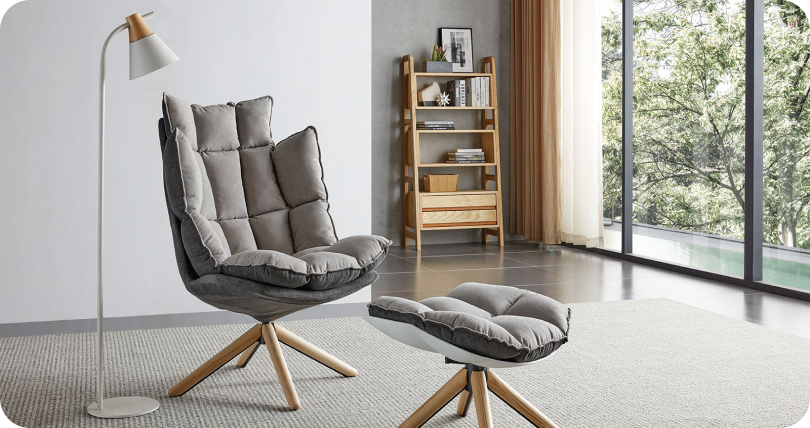
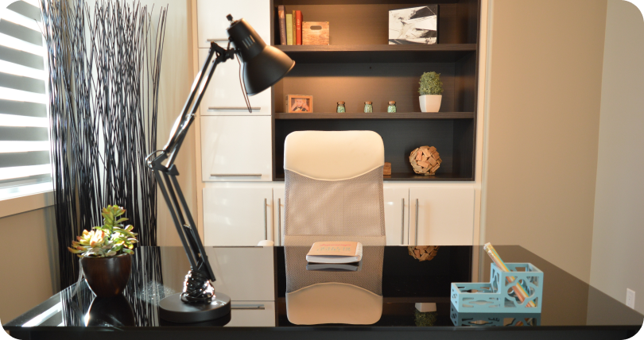
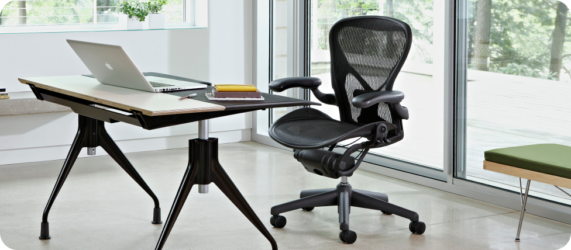

В этой инструкции мы разложим по полочкам сложный процесс оплаты коммунальных услуг — от использования платежки до внесения показаний счетчика.
Шаг 1
Выбор материала
Найдите единый платёжный документ. Либо бумажный в почтовом ящике, либо электронный на почте, привязанной к госуслугам.
Отсканируйте QR-код на платёжке и оплатите нужную сумму. Также вы можете настроить автоплатёж и сумма автоматически будет списываться с вашей карты.
Можно выбрать стул с подкладкой из хлопкаСетка — самый распространённый материал
Шаг 2
Регулировка высоты
Возможность регулировать высоту стула позволяет подобрать оптимальную позу для ваших ног и спины. Стул должен позволять установить сиденье на уровне коленей или щиколоток. Это способствует хорошей циркуляции крови.
Стул с рычагом для подъема
Шаг 3
Выбор спинки
Опоры для спины или спинка стула должны обеспечивать поддержку верхней части спины и плеч. Это помогает избежать прогибания и сутулости.